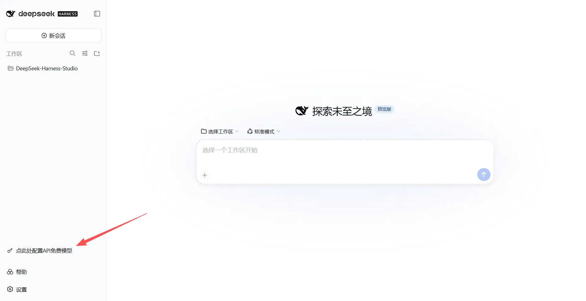
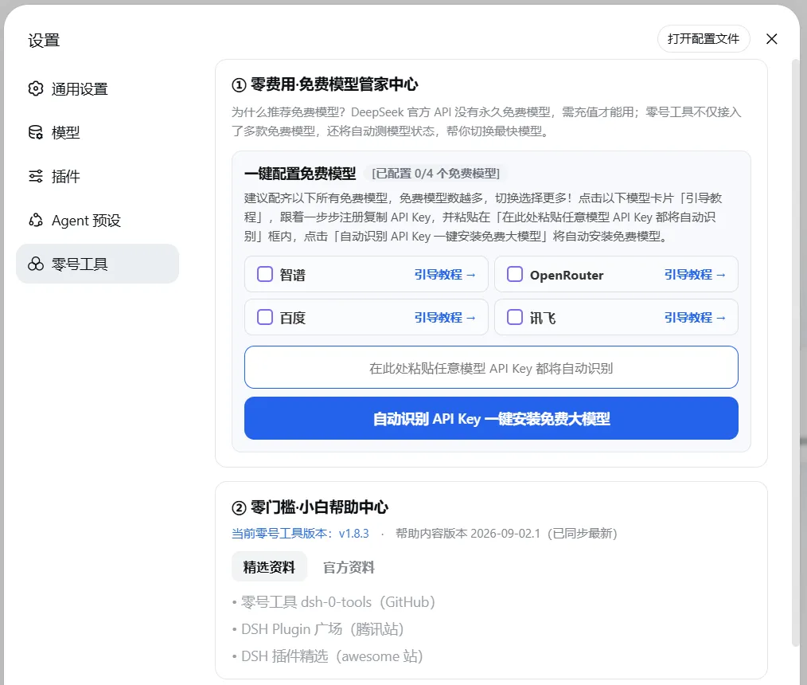
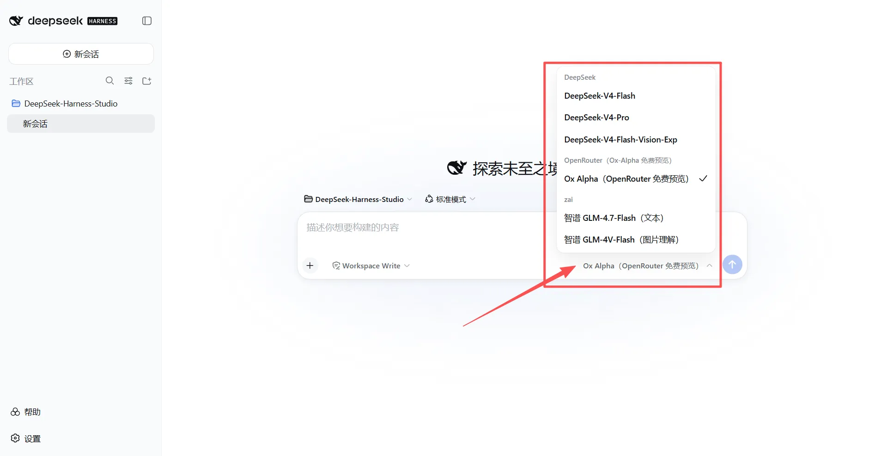
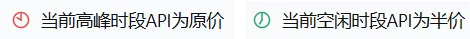
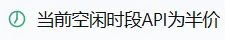

手把手教你 3 分钟玩转 DeepSeek Harness
全程一键操作 · 不花一分钱
钰婷坊 · 原创 · 2026年8月30日 · 阅读约 8 分钟
✦ 关于作者
你好，我是钰婷（Yukin），欢迎来到钰婷坊！我是一名 14 岁的初中女生，热爱创作、热爱科技，喜欢把好玩的想法变成真正能用的东西。这个暑假，我完成了自己在 GitHub 的第一个项目——零号工具，今天想把它分享给和我一样的编程小白。
最近 DeepSeek Harness（以下简称 DSH）很火，我也跟着折腾了一番。但作为一个完全不会编程的初中生，我遇到了三道坎：
❌ 不知道怎么装 DSH——官网全是命令行，看都看不懂
❌ 不知道怎么配免费模型——API Key 是什么？去哪弄？
❌ 用 DeepSeek 付费 API 不知道什么时候省钱——原价半价全靠猜
于是我拉着爸爸一起，花了一个暑假，做了这个「零号工具」插件——让小白也能 3 分钟零门槛零费用用上 DSH。这是我第一次写教程，也是我在 GitHub 的处女作，有不足之处请大家多多包涵！

▲ DSH 主界面，左下角「点此处配置API免费模型」就是零号工具的入口
WHAT IS DSH · 快速了解
DSH 是 DeepSeek 官方推出的 AI 编程助手。它不是网页版聊天机器人，而是一个运行在你电脑上的桌面应用，可以直接操作你的文件和终端，帮你写代码、改代码、解释代码、运行项目。
它火的原因很简单：DeepSeek 的模型能力强、价格便宜，而 DSH 把模型能力和本地开发环境打通了。你用自然语言说需求，它直接在你电脑上帮你完成——比如"帮我做一个个人博客网站"，它就会一步步帮你写好。
ABOUT THE TOOL · 设计理念
零号工具（dsh-0-tools）是我为 DSH 开发的插件，专门面向编程零基础的小白。设计理念就六个字：零门槛、零费用、零失控。
它解决小白的三个核心痛点：
⚡ 一键安装——自动装 Node.js、自动装 DSH、自动加载插件，不用敲一行命令
⚡ 一键配免费模型——配置中心接入智谱和 OpenRouter 双免费池，粘贴 Key 就能用
⚡ 实时计价提醒——用 DeepSeek 付费 API 时，界面实时提示当前是原价还是半价
INSTALLATION · 附下载地址
📥 第一步：下载零号工具
从以下两个地址下载压缩包，国内用户推荐 Gitee，访问更稳定：
🇨🇳 Gitee（推荐国内用户）：https://gitee.com/ai-yukin/dsh-0-tools
🌍 GitHub：https://github.com/ai-yukin/dsh-0-tools
进入仓库后，点击绿色的「Code」按钮，选择「Download ZIP」下载，然后解压到任意目录。
⚙️ 第二步：运行一键安装脚本
进入解压后的目录，双击 install.bat，剩下的交给脚本自动完成：
🔧 自动检测并安装 Node.js（用 winget，无需手动下载）
🔧 自动通过 npm 安装 DSH（@deepseek-ai/dsh）
🔧 自动备份旧版本插件（如有）
🔧 自动安装零号工具到 DSH
🔧 自动启动 DSH 并打开浏览器
🔧 自动在桌面创建「DeepSeek Harness」快捷方式
整个过程大约 2-3 分钟，期间如果弹出安全提示，选择「允许」或「仍要运行」即可。
🖥️ 第三步：启动 DSH
安装完成后，桌面会自动生成「DeepSeek Harness」快捷方式，以后双击就能启动，不用再敲命令。启动后浏览器会自动打开 http://127.0.0.1:3080，看到左下角出现「点此处配置API免费模型」提示条，就说明插件安装成功了。
FREE MODELS · 智谱 + OpenRouter 双免费池
点击左下角的提示条，进入「零费用·API 配置中心」。这里有两个免费模型可选，配置任意一个都可以用，两个都配也行。下面分别教你怎么注册和获取 API Key。
智谱是国内大厂，稳定性好、响应速度快。注册即送免费额度，包含两个模型：
📋 获取 API Key 步骤：
1. 打开智谱开放平台：https://open.bigmodel.cn/
2. 注册并登录（支持手机号、微信扫码）
3. 点击右上角「API Keys」进入管理页面
4. 点击「创建新的 API Key」，给 Key 起个名字（比如"DSH用"）
5. 复制生成的 Key，粘贴到零号工具配置中心的智谱输入框，点击「接入」
OpenRouter 是一个 AI 模型聚合平台，它的免费模型池包含约 27 款免费模型，每次请求自动从当前可用的模型中挑选一款执行，某款下架自动绕开——相当于一个 Key 通吃数十款免费模型。
📋 获取 API Key 步骤：
1. 打开 OpenRouter：https://openrouter.ai/
2. 注册并登录（支持 Google、GitHub 账号登录，免费注册，无需绑卡）
3. 进入 Keys 页面：https://openrouter.ai/keys
4. 点击「Create Key」，给 Key 起个名字
5. 复制生成的 Key，粘贴到零号工具配置中心的 OpenRouter 输入框，点击「接入」
⚠️ 注意：免费通道的对话内容可能被模型厂商留存用于训练，敏感内容建议用付费通道。免费档有速率限制（约每天 50 次请求，社区实测值），日常学习完全够用。
配置完成后，在 DSH 顶部的模型选择器里就能看到这些免费模型，直接切换使用。同时，左下角的配置提示条会自动隐藏——这说明你已经成功接入了免费模型。

▲ 配置中心，智谱和 OpenRouter 都显示「已接入」

▲ 模型选择器下拉，智谱 GLM-4.7-Flash、GLM-4V-Flash、OpenRouter 免费池都在列表里
BONUS FEATURES · 额外惊喜
除了一键安装和免费模型配置，零号工具还有两个很实用的功能：
💰 DeepSeek 计价时段提醒
如果你用 DeepSeek 付费 API，界面顶部会实时提示当前是高峰时段（原价）还是空闲时段（半价），帮你在对的时间用对的价格。这个提醒一眼就能看到，不用自己记时间表。

▲ 高峰时段提示——当前 API 为原价

▲ 空闲时段提示——当前 API 为半价
📚 在线帮助中心
左下角常驻「帮助」按钮，点击弹出官方资料和精选资料，新手遇到问题随时查阅，不用到处搜。帮助中心的内容会持续更新，跟着官方版本走。
Q & A · 你可能想问的
Q：免费模型真的不要钱吗？
A：智谱注册送免费额度，OpenRouter 免费池完全免费。免费档有速率限制（约每天 50 次请求），日常学习和轻度使用完全够用。重度使用可以考虑升级付费档。
Q：我完全不会编程，能用吗？
A：能！零号工具就是为小白设计的，一键安装、一键配置，全程不需要写代码。DSH 本身也是用自然语言对话的，你说需求，它帮你写。
Q：支持哪些系统？
A：一键安装脚本目前支持 Windows（Windows 10 / 11）。插件核心代码本身是跨平台的，macOS 用户如果已经手动装好了 DSH，可以手动安装插件（把插件文件复制到 ~/.dsh/profiles/web/node_modules/dsh-0-tools/，或运行 dsh plugin --profile web add /path/to/dsh-0-tools）。Mac 版一键安装脚本正在规划中。
Q：OpenRouter 免费模型池的对话内容会被留存吗？
A：免费通道的对话内容可能被模型厂商留存用于训练，敏感内容建议用付费通道或本地模型。这个在配置中心也有明确提示。
Q：安装失败怎么办？
A：最常见的原因是网络问题。如果 npm 安装 DSH 很慢，可以在命令行手动执行：npm install -g @deepseek-ai/dsh --registry=https://registry.npmmirror.com（国内镜像），然后重新运行 install.bat。
DSH 让 AI 编程变得触手可及
而零号工具让小白也能零门槛用上它
3 分钟安装，零费用配置
现在就去试试吧！
如果你觉得好用，欢迎去 GitHub 给我一个 Star ⭐
这是对一个 14 岁初中生最大的鼓励！
🇨🇳 Gitee：https://gitee.com/ai-yukin/dsh-0-tools
🌍 GitHub：https://github.com/ai-yukin/dsh-0-tools
资料来源：零号工具 GitHub / Gitee 仓库（ai-yukin/dsh-0-tools）｜DeepSeek Harness 官方｜智谱开放平台｜OpenRouter｜核验日期：2026-08-30
本文由钰婷坊原创，转载请注明出处